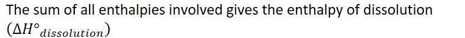

Free-Energy-of-Dissolution
Free Energy of Dissolution
-
Enthalpy/energy
-
Entropy/dispersion of energy throughout a system
-
These two mixed create the free energy
-
The energy available to do work
-
Helps us understand: thermodynamic favorability
- Is it favorable energy-wise to proceed with the reaction
-
-
To dissolve a salt:
-
{width="5.010416666666667in" height="0.3541666666666667in"}
-
Takes energy:
-
Break hydrogen bonding between water molecules
-
Break ionic bonds between cation and anion
-
-
Releases energy:
- Form ion-dipole interactions between cations/anions and water molecule dipoles
-
{width="8.21875in" height="0.6770833333333334in"}
-
-
 {width="5.78125in" height="1.8020833333333333in"}
{width="5.78125in" height="1.8020833333333333in"}
-
 {width="6.96875in" height="0.3541666666666667in"}
{width="6.96875in" height="0.3541666666666667in"}- Positive enthalpy => REQUIRES energy
-
 {width="6.6875in" height="0.3541666666666667in"}
{width="6.6875in" height="0.3541666666666667in"}- Negative enthalpy => RELEASES energy
<!-- -->
-
{width="4.84375in" height="0.3541666666666667in"}
-
Entropy: a measure of the dispersal of energy and matter
-
As the number of attractive forces decreases, molecules tend to separate
- Entropy increases
-
Increase in entropy => more ways to arrange a system
- More microstates
-
 {width="3.6875in" height="0.3541666666666667in"}
{width="3.6875in" height="0.3541666666666667in"} -
 {width="3.6354166666666665in" height="0.3541666666666667in"}
{width="3.6354166666666665in" height="0.3541666666666667in"} -
{width="3.7395833333333335in" height="0.3541666666666667in"}
-
{width="4.21875in" height="0.3541666666666667in"}
-
<!-- -->
-
 {width="6.020833333333333in" height="0.3541666666666667in"}
{width="6.020833333333333in" height="0.3541666666666667in"}-
 {width="5.458333333333333in" height="0.3541666666666667in"}
{width="5.458333333333333in" height="0.3541666666666667in"}- Free energy => energy available to do work
-
 {width="5.322916666666667in" height="0.3541666666666667in"}
{width="5.322916666666667in" height="0.3541666666666667in"} -
{width="3.8333333333333335in" height="0.3541666666666667in"}
-
{width="5.166666666666667in" height="0.3541666666666667in"}
<!-- -->-
 {width="7.822916666666667in" height="0.3541666666666667in"}
{width="7.822916666666667in" height="0.3541666666666667in"}-
Requires energy
-
The salt would be insoluble/slightly soluble
-
<!-- -->-
{width="7.604166666666667in" height="0.3541666666666667in"}
-
Releases energy
-
The salt would be soluble
-
-